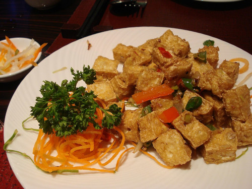

Crispy Salt & Pepper Tofu

Description
A Chinese takeaway classic - but DIY.
Ingredients
Serves 4:
- 5 spring onions
- 2 garlic cloves
- 9 bird's eye chillies
- 560g firm tofu
- 6 tbsp cornflour
- 1/2 tsp sugar
- salt
- pepper
- vegetable oil
Steps
- Add pepper, salt, and sugar in a bowl. Mix it.
- Slice tofu into cubes. Add cornflour to bowl and coat the tofu in it.
- Fry the tofu in the vegetable oil until crispy on all sides (large frying pan, medium-high heat).
- Finely chop spring onions, garlic, chillies. Fry them off and add tofu to combine.
- Sprinkle pepper, salt, and sugar mixture over tofu and stir through.